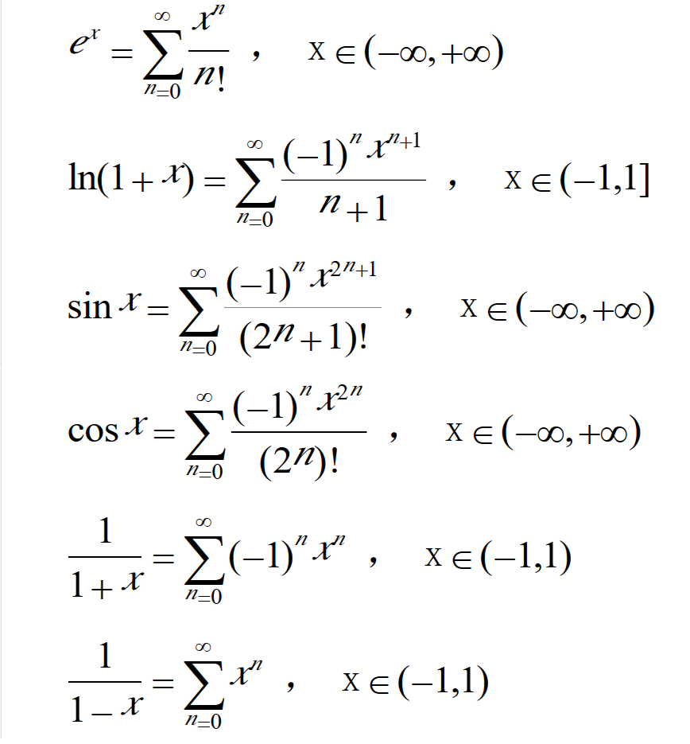

Welcome to AZgeek!
Useful websites
- PHP manual
- Runoob
- HMAC computing
- CTF-wiki
- Codecademy
- MDN Learn Web
- MDN CORS
- MDN CORS_cn
- PHP black magic Jianshu
- PHP CTF black
- Learn Vim
- Javascript Tutorial from Liaoxuefeng
- Python3 Tutorial from Liaoxuefeng
- Linux Vbird
- MarkDown grammer
Some notes
PHP

PHP int overflow: 如果给定的一个数超出了 integer 的范围，将会被解释为 float。同样如果执行的运算结果超出了 integer 范围，也会返回 float。
PHP float to int:向下取整。
PHP 7.0.0 起，NaN 和 Infinity 在转换成 integer 时，不再是 undefined 或者依赖于平台，而是都会变成零。
发现url中有?file=字样时可以修改后面为?file=php://filter/convert.base64-encode/resource=xxx.php来查看对应文件源码。
Javascript
Javascript中NaN这个特殊的Number与所有其他值都不相等，包括它自己。
Probability and Mathematical Statistic
